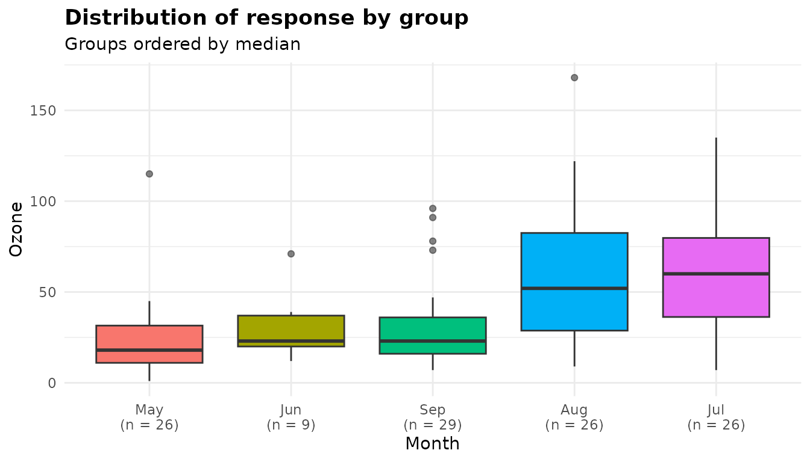
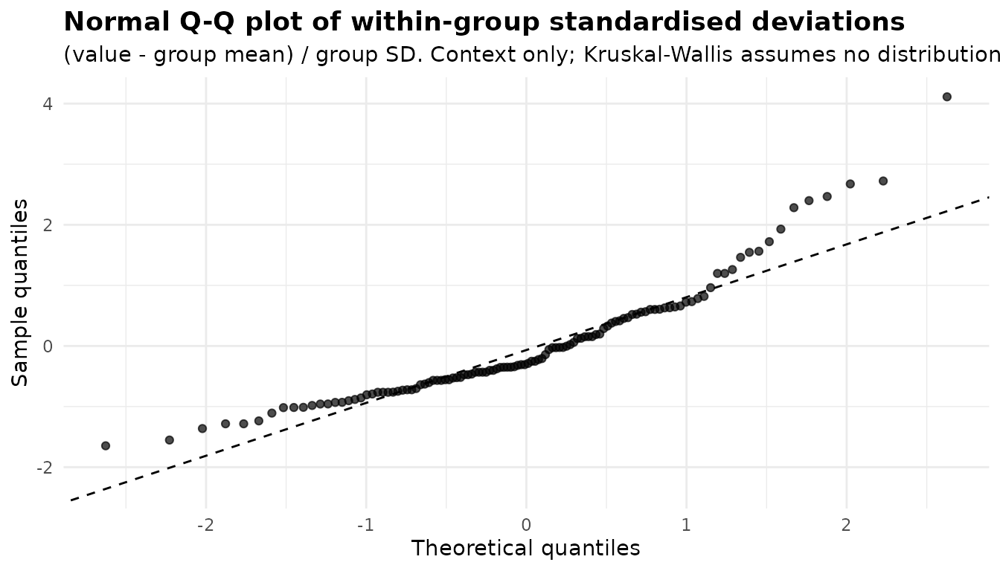
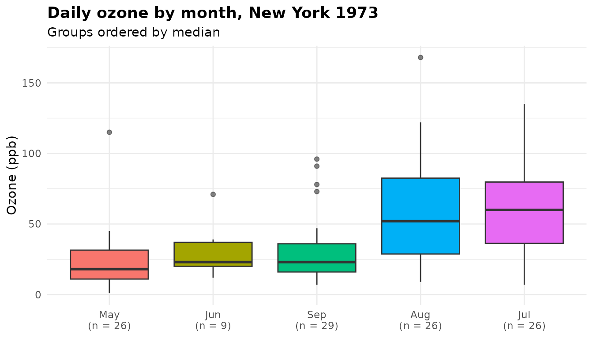
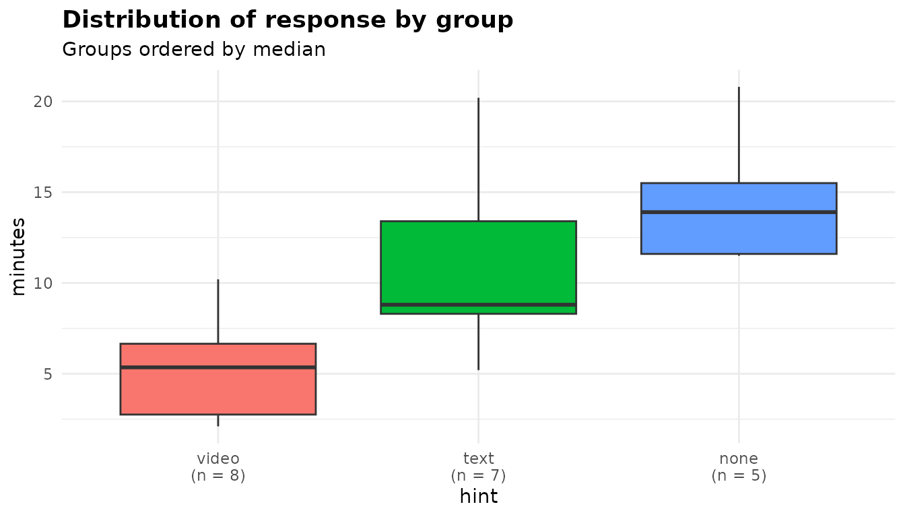

Kruskal-Wallis: comparing groups by ranks
Source:vignettes/articles/kruskal-wallis.Rmd
kruskal-wallis.Rmdanova_kw() compares a numeric response across groups
using ranks rather than the values themselves: the Kruskal-Wallis test
across all groups, then Dunn’s pairwise comparisons. Because only the
order of the values matters, it suits responses that are skewed, have
outliers, are measured on a coarse or ordinal scale, or include values
that are known only to be “more extreme than everything else”. It asks
whether values in some groups tend to rank higher than in others. That
is not a test of means, and it is a test of medians only when the
groups’ distributions have the same shape. When the means are the
question, use anova_welch() (walkthrough). The decision
guide covers the choice in more detail.
The data
airquality holds daily air-quality readings from New
York between May and September 1973. The response here is
Ozone, the mean ozone concentration in parts per billion.
The month is stored as a number, so give it readable labels first. A
factor keeps its level order, so the months stay in calendar order.
aq <- airquality
aq$Month <- factor(month.abb[aq$Month], levels = month.abb[5:9])
head(aq[, c("Ozone", "Month", "Day")])
#> Ozone Month Day
#> 1 41 May 1
#> 2 36 May 2
#> 3 12 May 3
#> 4 18 May 4
#> 5 NA May 5
#> 6 28 May 6
oz <- split(aq$Ozone, aq$Month)
round(t(sapply(oz, function(x) c(days = length(x), missing = sum(is.na(x)),
median = median(x, na.rm = TRUE),
mean = mean(x, na.rm = TRUE),
max = max(x, na.rm = TRUE)))), 1)
#> days missing median mean max
#> May 31 5 18 23.6 115
#> Jun 30 21 23 29.4 71
#> Jul 31 5 60 59.1 135
#> Aug 31 5 52 60.0 168
#> Sep 30 1 23 31.4 96Two features make a rank analysis attractive. The readings are right-skewed: in four of the five months the mean is above the median, and in every month the largest reading is more than twice the median. And 37 of the 153 days have no reading, 21 of them in June, so the groups are unequal in size.
Fitting the model
Columns are named as character strings: the response, then one or more grouping columns.
kw <- anova_kw(aq, "Ozone", "Month")
kw
#> Kruskal-Wallis rank sum test
#> ----------------------------
#> Call: anova_kw(data = aq, response = "Ozone", groups = "Month")
#> Observations used: 116 (37 input row(s) not in $data_used; see $notes)
#>
#> Omnibus test
#> term statistic df p_value
#> 1 Month 29.27 4 6.901e-06
#>
#> Notes
#> - Dropped 37 row(s) with missing values in: Ozone, Month.
#>
#> Plots available: box
#> (use plot(x, which = "box"))Reading the printout from the top:
- The first line names the method, and
Call:records how the fit was made. -
Observations used: 116counts the rows analysed. The 37 rows with no ozone reading were dropped, and the printout points to$notesfor the details. -
Omnibus testis the Kruskal-Wallis test, described in the next section. -
Notessays what was dropped and why. -
Plots availablelists what is in$plots: only the box plot, unless you ask for the optional diagnostics.
Only the analysed columns count towards missingness.
Solar.R also has missing values, but it was not part of the
analysis, so it removed nothing:
summary(kw) prints the same header followed by the
effect sizes, the group summaries and Dunn’s comparisons. The sections
below take them one at a time.
The omnibus test
kw$anova
#> term statistic df p_value
#> 1 Month 29.26658 4 6.900714e-06-
termis the grouping column (or a label for the combined cells when there are several; see below). -
statisticis the Kruskal-Wallis H. All 116 values are ranked together, and H measures how far each month’s mean rank lies from the overall mean rank, weighted by the month’s size. It includes the correction for tied values. -
dfis the number of groups minus one. H is referred to a chi-squared distribution on these degrees of freedom. -
p_valueis the probability of an H at least this large if all five months shared one distribution of ozone.
The test is stats::kruskal.test(), and its
htest object is kept in $model. Here it agrees
with calling kruskal.test() directly:
kruskal.test(Ozone ~ Month, data = aq)$statistic
#> Kruskal-Wallis chi-squared
#> 29.26658(anova_kw() passes kruskal.test() the ranks
rather than the raw values, so that ties are counted exactly as they
were ranked. The two can differ slightly only when the data contain
values that differ by floating-point error alone; see below.)
The mean ranks differ between months far more than chance would produce (p < 0.001). The test does not say which months differ. That is what Dunn’s comparisons are for.
Effect sizes
kw$effect_sizes
#> measure estimate
#> 1 epsilon_squared 0.2544920
#> 2 eta_squared_H 0.2276268With H the tie-corrected statistic, n observations and k groups:
-
epsilon_squaredis H / (n - 1). It is exactly the proportion of the variance of the ranks that lies between groups: the R² of a one-way analysis of variance on the ranks. You can check that: eta_squared_His (H - k + 1) / (n - k), a bias-adjusted version that subtracts what k groups would produce by chance. A negative value is reported as 0, with a note.
Take care with the names, which follow Tomczak and Tomczak (2014) and the effectsize package. Here epsilon squared is the unadjusted measure and therefore never smaller than eta squared, which is the reverse of what the same two names mean in a parametric analysis. Whichever you report, name it.
About 25% of the variation in the ranks of the ozone readings lies between months. No interval is reported for either measure.
Group summaries and Dunn’s comparisons
No model is fitted, so $emmeans holds plain group
summaries:
print(kw$emmeans, digits = 3)
#> group n median mean_rank mean sd se conf_low conf_high
#> 1 May 26 18 36.7 23.6 22.2 4.36 14.6 32.6
#> 2 Jun 9 23 48.7 29.4 18.2 6.07 15.4 43.4
#> 3 Jul 26 60 77.9 59.1 31.6 6.20 46.3 71.9
#> 4 Aug 26 52 75.2 60.0 39.7 7.78 43.9 76.0
#> 5 Sep 29 23 48.7 31.4 24.1 4.48 22.3 40.6The mean_rank column is the quantity Dunn’s comparisons
are built from. The median is usually the more useful
summary to report alongside them. The mean, sd
and the t interval for the mean (conf_low,
conf_high) are there for reference. They describe the raw
values, and play no part in the test.
$posthoc holds Dunn’s comparisons, one row per pair of
months:
print(kw$posthoc, digits = 3)
#> group1 group2 mean_rank_diff z p_value p_adjusted adjustment
#> 1 May Jun -12.0299 -0.92516 3.55e-01 4.44e-01 BH
#> 2 May Jul -41.2115 -4.41947 9.89e-06 9.89e-05 BH
#> 3 May Aug -38.5385 -4.13281 3.58e-05 1.79e-04 BH
#> 4 May Sep -11.9973 -1.32120 1.86e-01 2.66e-01 BH
#> 5 Jun Jul -29.1816 -2.24421 2.48e-02 4.96e-02 BH
#> 6 Jun Aug -26.5085 -2.03864 4.15e-02 6.91e-02 BH
#> 7 Jun Sep 0.0326 0.00254 9.98e-01 9.98e-01 BH
#> 8 Jul Aug 2.6731 0.28666 7.74e-01 8.60e-01 BH
#> 9 Jul Sep 29.2142 3.21720 1.29e-03 4.31e-03 BH
#> 10 Aug Sep 26.5411 2.92283 3.47e-03 8.67e-03 BH-
mean_rank_diffis the mean rank ofgroup1minus that ofgroup2. -
zis that difference divided by its standard error, so it has the same sign. -
p_valueis the two-sided p-value from the normal distribution, unadjusted. -
p_adjustedis adjusted by the method inadjustment: Benjamini-Hochberg ("BH") by default.
Dunn’s test uses the ranks from the single joint ranking of all 116
observations. It does not re-rank each pair, so it is not the same as
running a Wilcoxon rank-sum test on each pair: the comparisons use the
same ranking as the omnibus test. rstatix::dunn_test()
reports the same comparisons as group2 minus
group1, so its statistics have the opposite sign.
The tie correction
Ozone was recorded in whole parts per billion, so many days share a value, and tied values share their average rank. Ties reduce the variance of the ranks, and Dunn’s standard error allows for it. For groups i and j,
where the sum runs over the sets of tied values and t is the size of each set. Reproducing the May against July comparison by hand:
d <- kw$data_used
N <- nrow(d)
r <- rank(d$Ozone)
t_sizes <- table(r) # one entry per distinct value
tie_term <- sum(t_sizes^3 - t_sizes) / (12 * (N - 1))
c(tied_values = sum(t_sizes > 1), untied = N * (N + 1) / 12,
tie_term = tie_term)
#> tied_values untied tie_term
#> 27.0000000 1131.0000000 0.5782609
rbar <- tapply(r, d$Month, mean)
n <- table(d$Month)
se <- sqrt((N * (N + 1) / 12 - tie_term) * (1 / n[["May"]] + 1 / n[["Jul"]]))
(rbar[["May"]] - rbar[["Jul"]]) / se
#> [1] -4.419471That matches the z for May against July in
$posthoc. Here 27 distinct values are shared by two or more
days, but the correction is small against the untied variance, so it
barely changes any comparison. It matters more when a few values account
for much of the data, as with ratings on a five-point scale.
Reading the comparisons
July and August both rank well above May (both adjusted p < 0.001) and above September (adjusted p = 0.004 and 0.009). July and August do not differ from each other (adjusted p = 0.860), and neither do May, June and September. June sits between: its difference from July is just inside 5% after adjustment (0.0496), and from August just outside (0.0691). With only 9 June readings, the June comparisons are the least precise in the table.
Choosing adjust
The default, Benjamini-Hochberg, controls the false discovery rate:
among the comparisons you call significant, the expected proportion of
false ones. That suits the usual follow-up question “which of these
pairs differ?” When you need control of the chance of even one false
positive (the family-wise error rate), use "holm", which is
uniformly more powerful than "bonferroni". Any
stats::p.adjust() method is accepted, spelled out in full.
"tukey" is not: Dunn’s test is a comparison of ranks, not a
linear contrast.
adj <- sapply(c("BH", "holm", "bonferroni", "none"), function(a)
anova_kw(aq, "Ozone", "Month", adjust = a, plots = FALSE)$posthoc$p_adjusted)
cbind(ph[, c("group1", "group2")], signif(adj, 3))
#> group1 group2 BH holm bonferroni none
#> 1 May Jun 4.44e-01 1.00e+00 1.00e+00 3.55e-01
#> 2 May Jul 9.89e-05 9.89e-05 9.89e-05 9.89e-06
#> 3 May Aug 1.79e-04 3.23e-04 3.58e-04 3.58e-05
#> 4 May Sep 2.66e-01 7.46e-01 1.00e+00 1.86e-01
#> 5 Jun Jul 4.96e-02 1.49e-01 2.48e-01 2.48e-02
#> 6 Jun Aug 6.91e-02 2.07e-01 4.15e-01 4.15e-02
#> 7 Jun Sep 9.98e-01 1.00e+00 1.00e+00 9.98e-01
#> 8 Jul Aug 8.60e-01 1.00e+00 1.00e+00 7.74e-01
#> 9 Jul Sep 4.31e-03 1.04e-02 1.29e-02 1.29e-03
#> 10 Aug Sep 8.67e-03 2.43e-02 3.47e-02 3.47e-03Only p_adjusted changes. Under Holm, the June against
July comparison no longer passes at 5% (0.1489), while the comparisons
of July and August with May and September all still do.
Checking assumptions
Kruskal-Wallis assumes no particular distribution, so
$assumptions is empty by default:
kw$assumptions
#> list()The test does rest on two things no diagnostic in the fit checks. The first is that the observations are independent. Daily readings are not: a high-ozone day tends to be followed by another.
# Each day's reading against the next day's, within the same month
o <- aq$Ozone
same_month <- aq$Month[-1] == aq$Month[-nrow(aq)]
lag1 <- cor(o[-1][same_month], o[-nrow(aq)][same_month],
use = "complete.obs")
lag1
#> [1] 0.5434821With a day-to-day correlation of 0.54, the 116 readings carry less independent information than their number suggests, so treat the p-values here as somewhat optimistic. The second is that if you want to read a difference as a shift in the median, the groups’ distributions need similar shapes. The box plot below is the place to judge that.
With diagnostics = TRUE the function adds a per-group
Shapiro-Wilk table in $assumptions$normality, a Q-Q plot in
$plots$qq, and a note:
kwd <- anova_kw(aq, "Ozone", "Month", diagnostics = TRUE)
kwd$assumptions$normality
#> group n statistic p_value note
#> 1 May 26 0.7140084 8.293832e-06 <NA>
#> 2 Jun 9 0.8432751 6.280014e-02 <NA>
#> 3 Jul 26 0.9796718 8.668861e-01 <NA>
#> 4 Aug 26 0.9327912 9.032475e-02 <NA>
#> 5 Sep 29 0.7837315 4.325436e-05 <NA>
kwd$notes
#> [1] "Dropped 37 row(s) with missing values in: Ozone, Month."
#> [2] "The normality diagnostics are contextual only. Kruskal-Wallis does not assume normality and the test does not depend on them."
names(kwd$plots)
#> [1] "box" "qq"As the note says, these are context only: nothing in the test depends
on them. They can help you explain why you chose a rank test. Here May
and September are clearly non-normal, which is the kind of evidence that
argues against comparing means with anova_welch(). The diagnostics article covers the checks across
the whole package.
Plots
plot(kw, "box")
The box plot is always built. It shows the distribution
of each group, ordered by median and labelled with its size. What to
look for:
- Where the groups sit. July and August sit clearly above the other three months, the pattern Dunn’s comparisons found (with the June comparisons the least certain).
- Shape. In most months the upper whisker is longer than the lower one, and May, June, September and August each have at least one high outlier. That long upper tail is what pulls the means above the medians.
- Spread. The spreads differ: the boxes for July and August are much taller than those for the other three months. So the groups differ in more than location, and the result is best read as “ozone tends to be higher in July and August” rather than as a statement about medians alone.
plot(kwd, "qq")
The qq plot appears only with
diagnostics = TRUE. Each value is expressed as its
deviation from its own group’s mean, divided by its own group’s standard
deviation, and the points are compared with a normal distribution. Here
the upper tail curves well above the dashed line and the lowest points
also sit above it, the pattern of right skew: a long upper tail and a
short lower one. Like the Shapiro-Wilk table, it is context only.
Both are ordinary ggplot2 objects that you can
modify with +:
plot(kw, "box") +
ggplot2::labs(title = "Daily ozone by month, New York 1973",
x = NULL, y = "Ozone (ppb)")
See Plots and visual customisation for more.
Infinite values
Missing values are dropped and counted in $n_removed, as
above. Infinite values are not. In a rank analysis Inf is
simply larger than everything else, which is how you might record, say,
a participant who never completed a task. The small constructed example
below records the minutes taken to solve a puzzle, with three kinds of
hint. Anyone who gave up is recorded as Inf:
puzzle <- data.frame(
hint = factor(rep(c("none", "text", "video"), each = 8),
levels = c("none", "text", "video")),
minutes = c(20.8, Inf, 13.9, 15.5, Inf, 11.5, Inf, 11.6,
20.2, 8.8, 15.2, Inf, 5.2, 8.1, 8.5, 11.6,
5.4, 2.1, 2.3, 10.2, 5.3, 2.9, 5.6, 9.8)
)
pz <- anova_kw(puzzle, "minutes", "hint")
pz
#> Kruskal-Wallis rank sum test
#> ----------------------------
#> Call: anova_kw(data = puzzle, response = "minutes", groups = "hint")
#> Observations used: 24
#>
#> Omnibus test
#> term statistic df p_value
#> 1 hint 13.13 2 0.00141
#>
#> Notes
#> - 4 infinite value(s) of `minutes` were kept and ranked as the most extreme observations. Group means and standard deviations that involve them are reported as Inf, -Inf or NA; the mean ranks are exact. The box plot does not draw them.
#>
#> Plots available: box
#> (use plot(x, which = "box"))
pz$emmeans
#> group n median mean_rank mean sd se conf_low conf_high
#> 1 none 8 18.15 18.625 Inf NA NA NA NA
#> 2 text 8 10.20 13.000 Inf NA NA NA NA
#> 3 video 8 5.35 5.875 5.45 3.143701 1.111466 2.8218 8.0782All 24 rows are used. The four people who gave up rank above everyone
who finished, and take a tied rank among themselves. The mean ranks and
medians are exact. A group containing Inf has an infinite
mean and no standard deviation, so those columns are reported as
Inf and NA. The note records that the infinite
values were kept and ranked, and that the box plot does not draw them. A
box plot has nowhere to put an infinite value, so it shows only the
finite ones, and its labels count what is drawn:
plot(pz, "box")
Here the labels read 5 for none and 7 for
text, not 8: the people who gave up are missing from the
picture, although they hold the highest ranks in the test. The boxes’
medians are those of the finishers only, so the none box
sits at 13.9 minutes against a true median of 18.15 in
$emmeans. For data like these, read the medians and mean
ranks in $emmeans alongside the plot.
A comparison of means has no use for an infinite value.
anova_welch() drops those rows, as it does missing
ones:
anova_welch(puzzle, "minutes", "hint", plots = FALSE)$n_removed
#> [1] 4Options worth knowing
conf_level
conf_level affects only the t intervals for the group
means in $emmeans. Nothing in the test or in Dunn’s
comparisons depends on it:
k90 <- anova_kw(aq, "Ozone", "Month", conf_level = 0.90, plots = FALSE)
k90$emmeans[, c("group", "mean", "conf_low", "conf_high")]
#> group mean conf_low conf_high
#> 1 May 23.61538 16.17033 31.06044
#> 2 Jun 29.44444 18.15829 40.73060
#> 3 Jul 59.11538 48.51757 69.71320
#> 4 Aug 59.96154 46.66857 73.25450
#> 5 Sep 31.44828 23.82207 39.07449
posthoc
There are choose(k, 2) comparisons, so with many groups
you may want only the omnibus test. The effect sizes come from H, so
they are still reported:
anova_kw(aq, "Ozone", "Month", posthoc = FALSE, plots = FALSE)$notes
#> [1] "Dropped 37 row(s) with missing values in: Ozone, Month."
#> [2] "Pairwise comparisons were not computed (posthoc = FALSE); there would have been 10. $effect_sizes still reports epsilon squared and eta squared, which come from the omnibus test."Several grouping columns
Given several grouping columns, anova_kw() combines them
into one factor of the level combinations that contain data, and runs
one test across those cells. warpbreaks has two wools at
three tensions:
wk <- anova_kw(warpbreaks, "breaks", c("wool", "tension"), plots = FALSE)
wk$anova
#> term statistic df p_value
#> 1 wool x tension cells 15.77799 5 0.007507339
wk$notes
#> [1] "The 2 grouping variables were combined into 6 cells and tested with a single omnibus Kruskal-Wallis test. This cannot separate main effects or test an interaction; for that, use a Scheirer-Ray-Hare or aligned-rank-transform analysis."The test compares the six cells. As the note says, it cannot separate a wool effect from a tension effect or test their interaction.
Values that differ only by rounding error
Values are ranked exactly as stored. Two numbers that should be equal
but were computed differently, such as 0.1 + 0.2 and
0.3, are therefore ranked as distinct values, not as a tie.
The function looks for such near-ties and says when it finds them:
nt <- data.frame(g = rep(c("a", "b"), each = 3),
y = c(0.1 + 0.2, 0.2, 0.25, 0.3, 0.9, 1.1))
nt_fit <- anova_kw(nt, "y", "g", plots = FALSE)
nt_fit$notes
#> [1] "Some values of `y` differ only in their last few significant digits (as 0.1 + 0.2 and 0.3 do) and were ranked as distinct values, not as ties. If they are meant to be equal, round the response before the analysis."
c(anova_kw = nt_fit$anova$statistic,
kruskal.test = unname(kruskal.test(y ~ g, data = nt)$statistic))
#> anova_kw kruskal.test
#> 2.333333 2.401961kruskal.test() on the raw values ranks the two numbers
as distinct but counts them as a tie when it corrects for ties, because
it counts ties on the printed values. That is why its statistic differs
slightly from the one anova_kw() reports, which counts ties
on the ranks it actually used. If such values are meant to be equal,
round the response before the analysis. They then become a genuine tie,
the note goes away, and the two statistics agree:
nt$y <- round(nt$y, 10)
nt_round <- anova_kw(nt, "y", "g", plots = FALSE)
nt_round$notes
#> character(0)
c(anova_kw = nt_round$anova$statistic,
kruskal.test = unname(kruskal.test(y ~ g, data = nt)$statistic))
#> anova_kw kruskal.test
#> 3.137255 3.137255What the notes say
kw$notes
#> [1] "Dropped 37 row(s) with missing values in: Ozone, Month."For the ozone fit the only note records the 37 rows dropped for
missing values, and names the columns that were checked. Other notes you
have seen above: infinite values kept, the contextual status of the
diagnostics, posthoc = FALSE, combined cells, and
near-ties. The function also writes a note when
eta_squared_H is negative (and floored at 0) or undefined.
Read $notes on every fit.
Reporting the result
A write-up built from the fit with inline R, so the numbers cannot drift from the analysis:
Daily ozone concentrations differed between months (Kruskal-Wallis H(4) = 29.27, p < 0.001, ε² = 0.25; n = 116 days with a reading). Median ozone was 60 ppb in July and 52 ppb in August, against 18 ppb in May and 23 ppb in September. In Dunn’s comparisons with Benjamini-Hochberg adjustment, July and August each ranked higher than May (both adjusted p < 0.001) and than September (adjusted p = 0.004 and 0.009 respectively).
Say which effect size you report (epsilon squared as defined here) and which adjustment you used. Also say that readings were missing on 37 days, mostly in June.
See also
-
anova_welch()and the Welch walkthrough for comparing means. -
anova_glm()and the analysis-of-deviance walkthrough for a model of a skewed response, with a Gamma family for example. - Working with results for the structure of the returned object and more on reporting.
- Diagnostics across the package and Plots and visual customisation.
- The Get Started vignette for a tour of every function.